Une histoire de famille · 1606 – 2026
Des montagnes d'Alicante au port d'Oran, des plaines du Poitou aux prés de la Montagne Noire… et jusqu'à l'Arkansas de Hayden.
Ouvrir le livre ↓Oran, vue générale du port prise de Santa Cruz — carte postale, début du XXe siècle
Avant-propos
Ces pages rassemblent ce que l'on sait aujourd'hui des ancêtres de Marine et de Hayden, à partir d'actes de baptême écrits à la plume sous Louis XIV, de registres militaires, de cartes d'identité et de recensements américains.
On y croise une arrière-grand-mère née le jour où, selon la légende, il neigea sur Rome ; un grand-père venu d'un village où l'on ne compta que trois naissances en 1929 ; une famille installée au pied de la même montagne depuis plus de trois siècles ; et, de l'autre côté de l'Atlantique, la famille de Hayden, qui a traversé l'Amérique d'est en ouest.
Bonne lecture.
Chapitre premier
Cinq routes, parties d'Espagne, du Poitou, du Tarn et d'Angleterre, qui convergent vers deux personnes. Clique sur une branche pour suivre son voyage, puis sur un point pour en savoir plus.
Chapitre deux
À gauche, tes ancêtres ; à droite, ceux de Hayden. Touche une personne pour lire son histoire. Les cases en pointillés sont les ancêtres qui restent à découvrir — l'enquête continue !
↔ Fais glisser l'arbre pour le parcourir.
Chapitre trois
Barselo & Valverde · 1850 – 1962
Rafael Monleón, La rade d'Alicante, XIXe siècle (Musée du Prado)
Au milieu du XIXe siècle, la province d'Alicante a faim. Sécheresses, petites terres, journaliers payés une misère. En face, à une dizaine d'heures de mer, il y a Oran — une ville qui a été espagnole pendant près de trois siècles, où l'on parle encore castillan et valencien, et où les colons français cherchent désespérément des bras pour défricher, bâtir les routes, planter la vigne.
Personne n'est venu « recruter » tes ancêtres : ils sont partis d'eux-mêmes, sur des voiliers qu'on appelait des balancelles. On disait alors que sans le bras de l'ouvrier espagnol, la terre d'Oranie n'aurait jamais été défrichée.
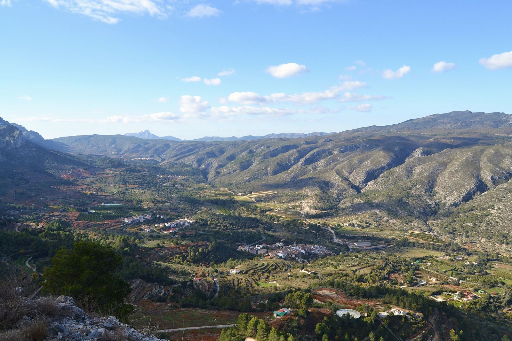
Deux familles, deux routes. Les Barselo viennent du Levant catalanophone : Miguel Barceló Orts et Maria Dolores Lon Cabot, en Espagne ; leur fils Francisco s'installe à Oran, où il épouse Antonia Lopez en 1857. La famille est à Oran dès les années 1860.
Les Valverde, eux, sont des paysans d'Andalousie orientale — Albuñol, dans les montagnes de Grenade, et Pulpí, près d'Almería. Ils s'installent à Oued Imbert, un village agricole près de Sidi Bel Abbès, avec d'autres familles venues des mêmes villages : Caparrós, Figueroa, Vargas, Gallardo…
En 1928, le mariage de Trinitaria Barselo et de Dominique Valverde, c'est la rencontre de l'Espagne valencienne et de l'Espagne andalouse.
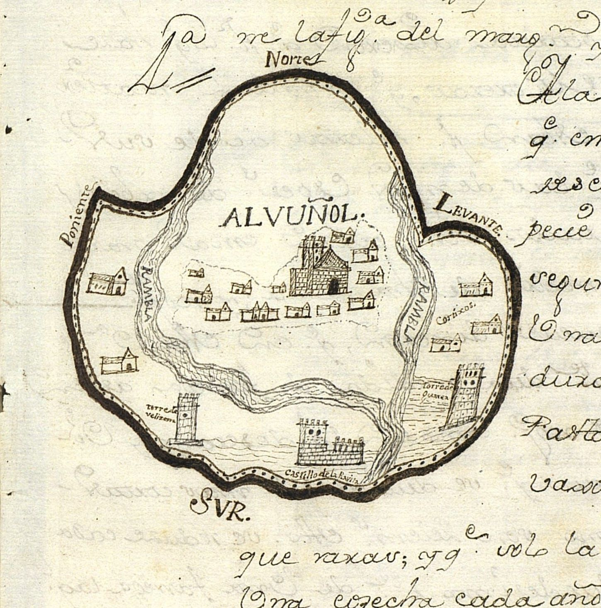
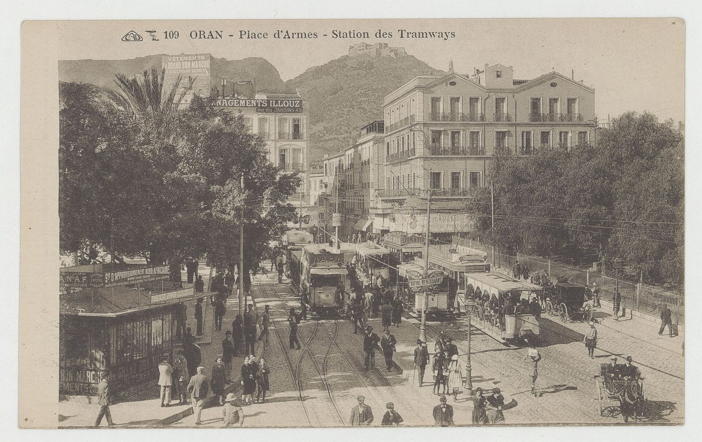
Oran, la place d'Armes et ses tramways — l'Oran où grandit Trinitaria.
5 août 1894 · Oran
Ce jour-là, l'Église fête Notre-Dame-des-Neiges : la légende raconte qu'au IVe siècle, il neigea en plein mois d'août sur une colline de Rome, pour indiquer où bâtir une basilique. Fidèles à la coutume espagnole du saint du jour, ses parents l'appellent Trinitaria Nieves.
Elle a de la chance, sans le savoir : cinq ans plus tôt, la loi du 26 juin 1889 a rendu Françaises les enfants comme elle. Elle va à l'école de la République — sa signature, quatre-vingts ans plus tard, est toujours élégante et sûre d'elle, à une époque où beaucoup d'immigrés signaient d'une croix.
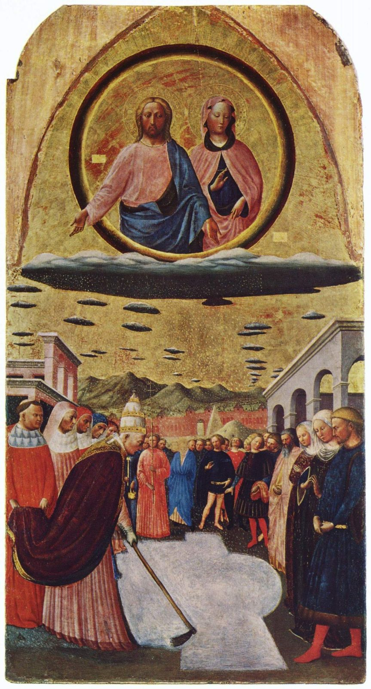
9 juin 1928 · Oran
Trinitaria a presque 34 ans quand elle épouse Dominique Isidore Valverde, de quatre ans son cadet. Mariage tardif ? La Grande Guerre a fauché les hommes de sa génération ; beaucoup de femmes nées vers 1894 se sont mariées avec des garçons un peu plus jeunes.
Dominique Isidore — Domingo Isidro en espagnol — a quitté la terre de ses parents. Il est caissier-comptable au Crédit Foncier, la grande banque de la colonie. Le petit-fils de paysans andalous est devenu un employé de bureau respecté : c'est toute l'ascension d'une génération.
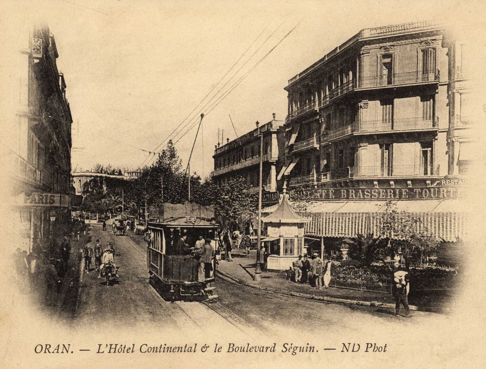
5 février 1931 · Oran
Deux ans et demi après le mariage naît leur fille. Elle a un prénom bien français, Marie-Rose… et un second prénom qui trahit la tradition familiale : Agathe, parce qu'elle est née un 5 février, jour de Santa Águeda. La coutume du saint du jour a traversé une génération de plus.
Au début des années 1950, la jeune femme rencontre un militaire venu de loin, du Poitou : Marc Manceau.
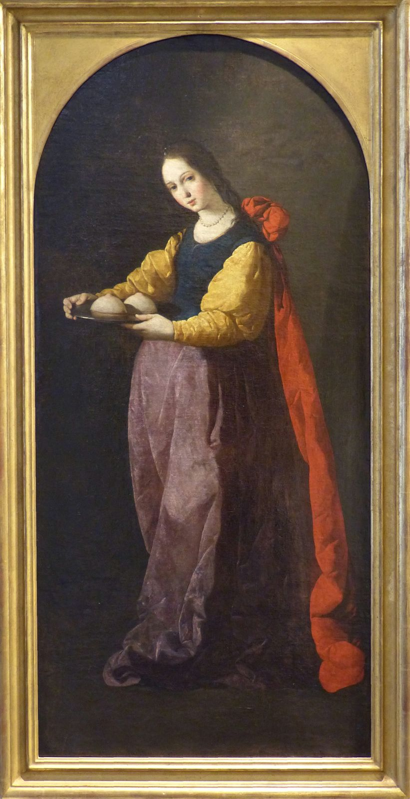
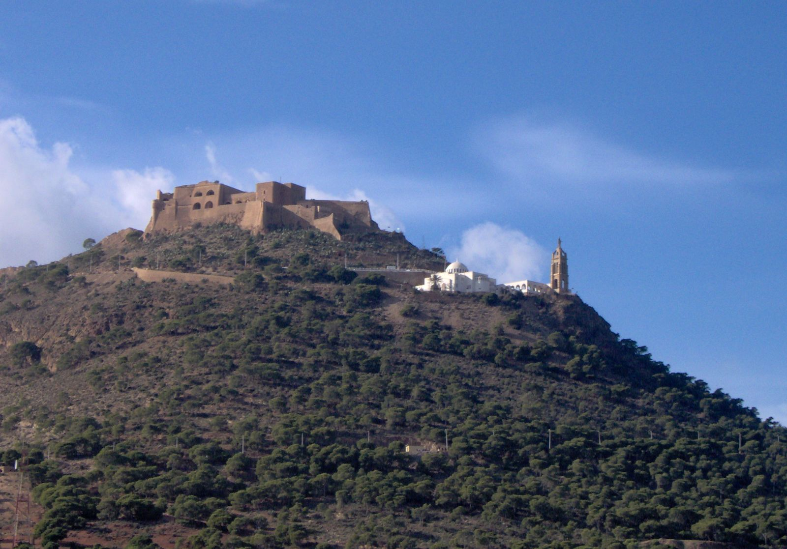
1962. L'Algérie devient indépendante. Comme presque tous les Européens d'Oranie, la famille doit partir vers une « métropole » où elle n'a jamais vécu. Trinitaria a 68 ans.
Chapitre quatre
Manceau & Mangou · 1606 – 2001
Saint-Martin-de-Bernegoue (Deux-Sèvres) et son église dans la plaine
21 juillet 1929 · Saint-Martin-de-Bernegoue
Il faut imaginer un village de quelques centaines d'âmes dans la plaine de Niort, au bord de la Guirande : des champs de blé et de luzerne, des vaches laitières, une église romane. Cette année-là, on n'y enregistre que trois naissances. L'une d'elles est celle de Marc Rémi Manceau, ton grand-père.
Il grandit pendant la crise des années 1930, puis sous l'Occupation. Pour un jeune homme de la campagne, l'armée, à la fin des années 1940, c'est une sécurité, une fierté… et la promesse de voir le monde.
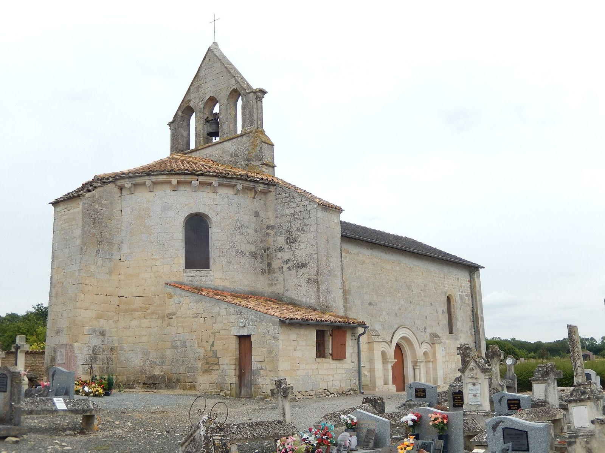
Les Manceau ne sont pas arrivés là hier. En 1606, sous Henri IV, un Manceau vend une terre à un certain Nouel Piet : l'acte est conservé aux Archives des Deux-Sèvres. C'est la plus ancienne trace écrite de la famille dans la région.
Au fil des siècles, les registres égrènent les noms : Estienne Manceau et Jeanne Raimbert vers 1610, Jean Manceau et Louise Alory en 1753, Pierre Manceau sous Napoléon… Des cultivateurs, presque tous, alliés aux familles du coin : Mangou, Chauveau, Bernegoue.
Ton nom lui-même raconte un voyage plus ancien encore : au Moyen Âge, un « Manceau », c'était quelqu'un venu du Maine, la région du Mans.
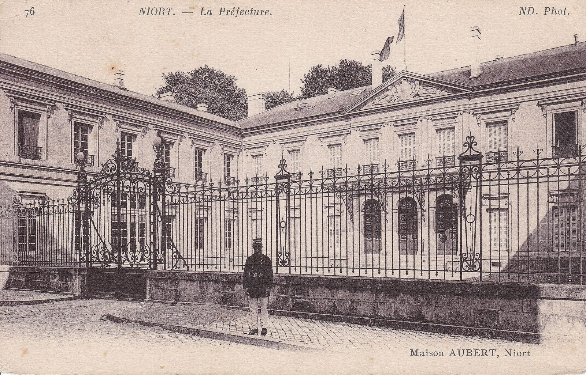
Affecté en Oranie au début des années 1950, au moment où l'armée y concentre beaucoup d'hommes, le jeune militaire poitevin rencontre Marie-Rose Valverde. Leur histoire est celle de bien des couples de l'époque : un soldat de « métropole » et une fille de la classe moyenne oranaise.
Au fil des garnisons naissent trois garçons : Christian — ton père —, Thierry et Patrick. En 1962, la famille s'installe à Toulouse, grande ville militaire du Sud-Ouest. La grand-mère Trinitaria, veuve, vient vivre tout près.
Marc Rémi s'éteint à Toulouse le 20 avril 2001 ; Marie-Rose le suit le 26 novembre 2004.
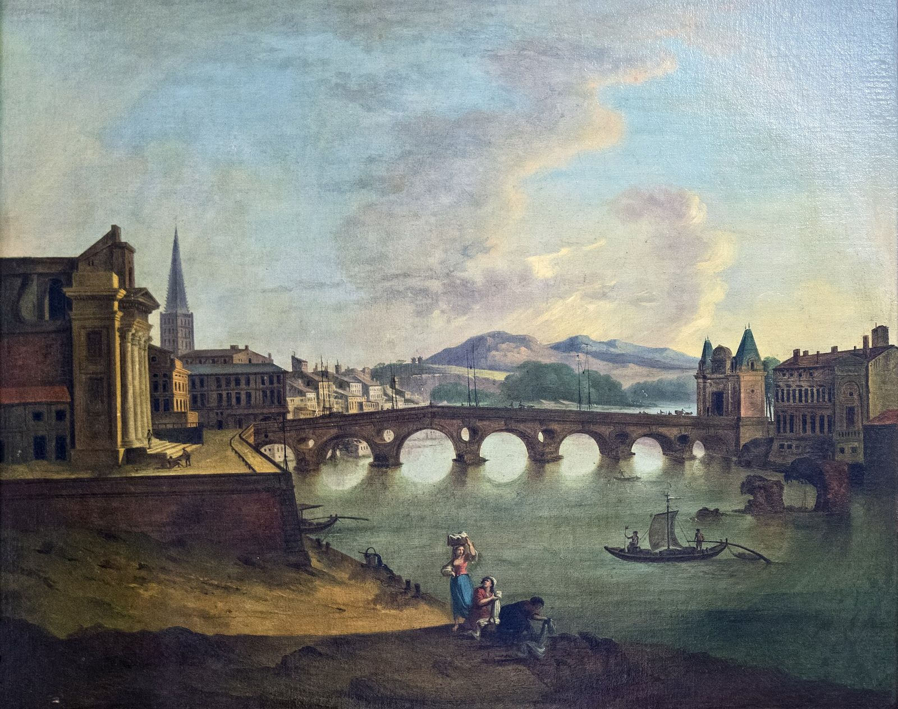
Chapitre cinq
Bolon & Delprat · 1673 – 2019
Labruguière photographiée depuis un cerf-volant par Arthur Batut, 1889 — l'une des toutes premières photos aériennes
La photo ci-dessus est un petit trésor. En 1889, à Labruguière, le photographe Arthur Batut accroche un appareil photo à un cerf-volant et déclenche à distance : il invente la photographie aérienne par cerf-volant. Ton grand-père Xavier est né quarante ans plus tard dans ce même village — et un musée y porte aujourd'hui le nom de Batut.
4 février 1673 · Dourgne
C'est le plus vieux nom de la branche. Ce jour-là, sous Louis XIV, le curé de Dourgne inscrit au registre le baptême de Guillemette Delprat — il écrit « Guillemete ». Vingt-cinq ans plus tard, elle épouse un Siguié, dont l'acte dit qu'il est « laboureur au pignié » : sans doute un paysan qui, l'hiver, peignait la laine pour les drapiers de Dourgne et de Castres.
Elle a survécu à la terrible famine de 1693–1694. Après elle, les Delprat ne quitteront plus Dourgne pendant trois siècles.
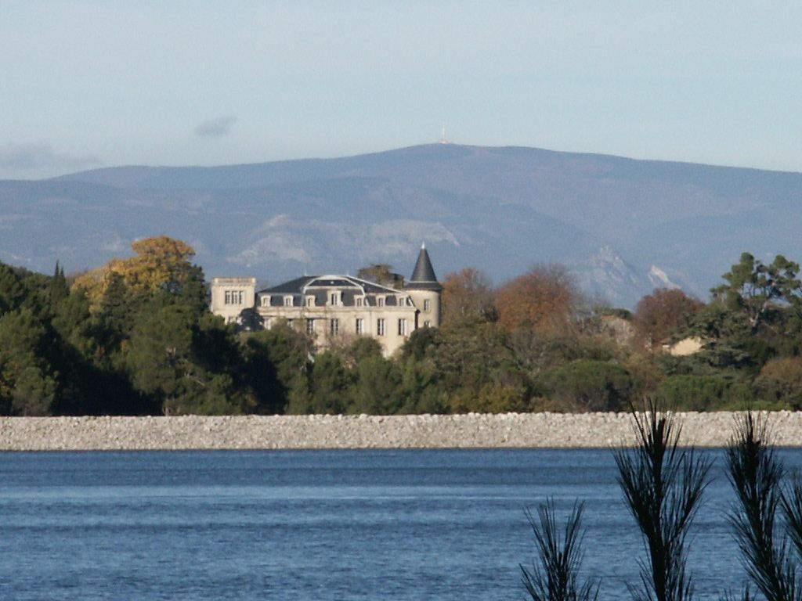
Delprat, en occitan, c'est del prat : « du pré ». Et Dourgne est l'un des tout premiers foyers de ce nom en France — plus d'un millier de Delprat y sont recensés au fil des siècles.
À la Révolution, les Delprat deviennent « propriétaires cultivateurs » : ils possèdent leurs terres et leurs bœufs de labour. On les voit se marier avec les familles voisines — Gabaude, Lencou, Moulet, Vidal, Solomiac — toujours dans un mouchoir de poche entre Dourgne, Labruguière et Castres.
Le 6 avril 1939, à Dourgne, naît Élise Rosalie Delprat, ta grand-mère.
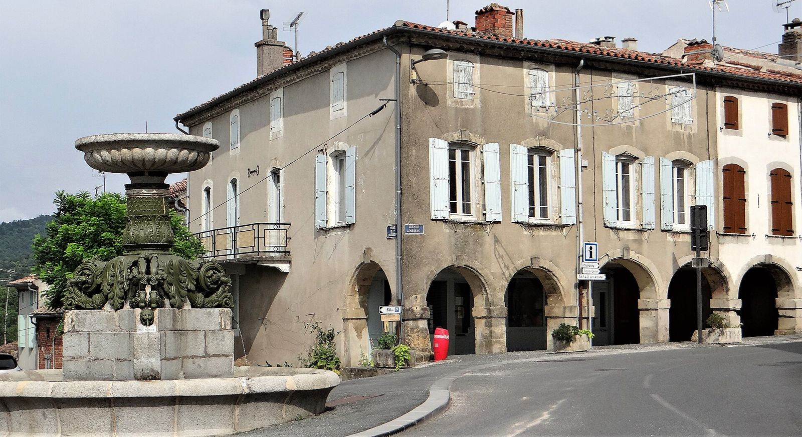
1er décembre 1895 – 18 janvier 1975 · Labruguière
Côté Bolon, la famille est très pieuse : une religieuse, Sœur Bolon, travaille chez les Sœurs Bleues de Castres à la fin du XIXe siècle, et tous les garçons portent « Marie » parmi leurs prénoms.
Joseph Paul Henri Marie Bolon a dix-huit ans en 1914. Mobilisé, il se retrouve en 1918 en Champagne, près de Cramant, l'année de la seconde bataille de la Marne. Il en revient. Il se marie à Labruguière et transmet ses trois prénoms, dans l'ordre, à son fils Xavier Paul Henri Marie, né le 14 août 1929.
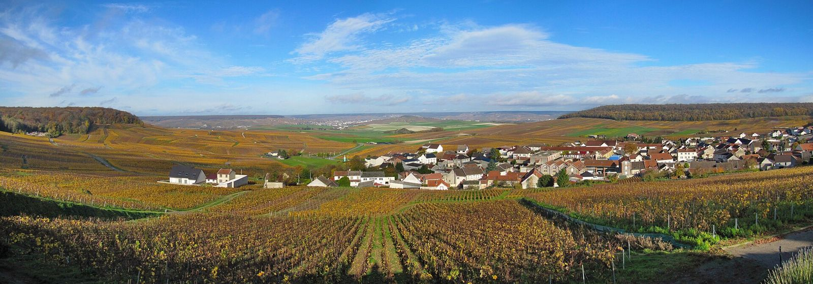
Xavier Bolon et Élise Delprat font leur vie à Labruguière, à douze kilomètres de Dourgne : toute leur histoire tient dans un rayon de quinze kilomètres au pied de la Montagne Noire. C'est l'exact inverse des Espagnols d'Oran, qui ont tout quitté — et pourtant les deux histoires vont se rejoindre.
Élise s'éteint en 2013 ; Xavier six ans plus tard, à 90 ans. Leur fille, ta mère, épouse un garçon de Toulouse : Christian Manceau.
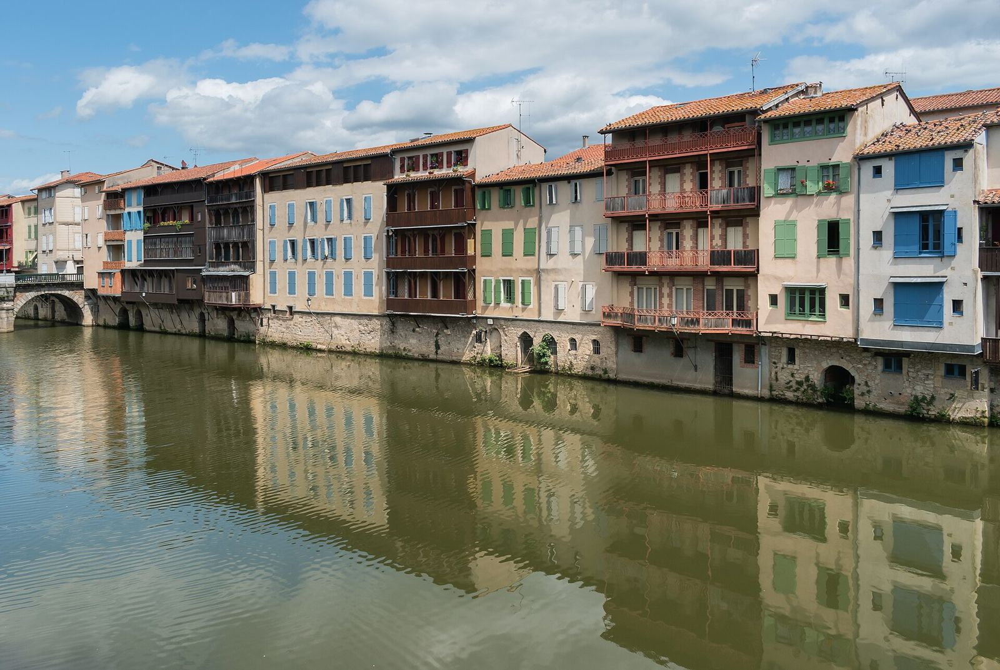
Toulouse
Un soldat poitevin, une Oranaise fille d'Espagnols, et une famille tarnaise qui n'avait jamais bougé : il a fallu une guerre, un exil et une ville — Toulouse — pour que ces trois histoires n'en fassent plus qu'une.
Chapitre six
La famille de Hayden · Callicott & Strozyk
Récolte du coton dans l'Arkansas, 1938 — photographie de Russell Lee
Callicott vient du vieil anglais : cald, froid, et cot, chaumière. Le nom d'un hameau anglais, emporté de l'autre côté de l'océan à l'époque coloniale.
Au XVIIIe siècle, on trouve des Callicott en Virginie, dans les comtés de Prince Edward et de Charlotte. Puis la famille descend en Caroline du Nord, traverse le Tennessee et le nord du Mississippi, et franchit enfin le grand fleuve pour s'installer comme fermiers dans l'Arkansas, dans la seconde moitié du XIXe siècle.
Pendant que les Barselo traversaient la Méditerranée vers Oran, les Callicott traversaient l'Amérique vers l'ouest. Deux familles de pionniers.
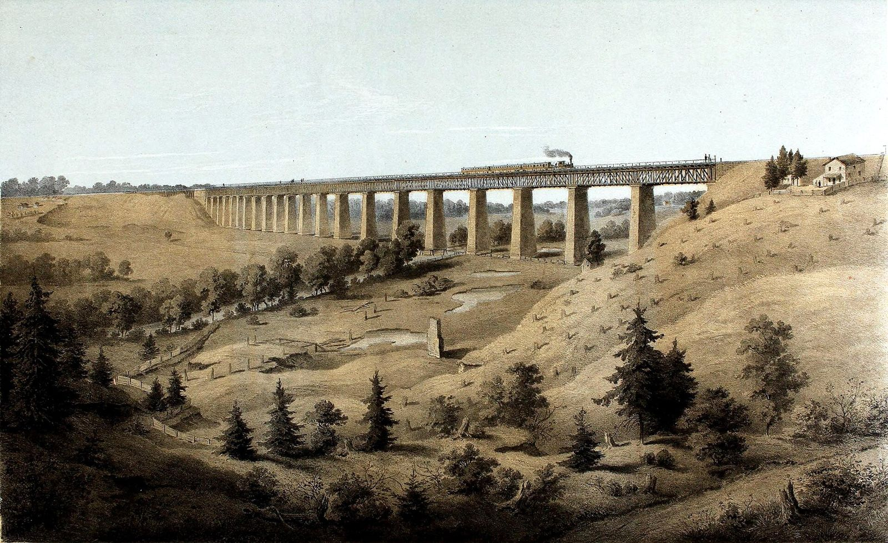
Tout au sud-ouest de l'Arkansas, là où l'État touche le Texas et l'Oklahoma, William Wheeler Callicott (né vers 1869) et Elizabeth Cordelia Cartwright élèvent au moins neuf enfants entre Foreman, Wallace et Jackson Township.
Parmi eux : Wallace, mobilisé en 1918 — la même année où Joseph Bolon était en Champagne — ; Beulah Edith, disparue toute jeune ; Edna Isbell, Fredrick McKinley… et Oscar, qui épouse Viola. Oscar et Viola auront trois filles : Marie, Alma et Dorothy.
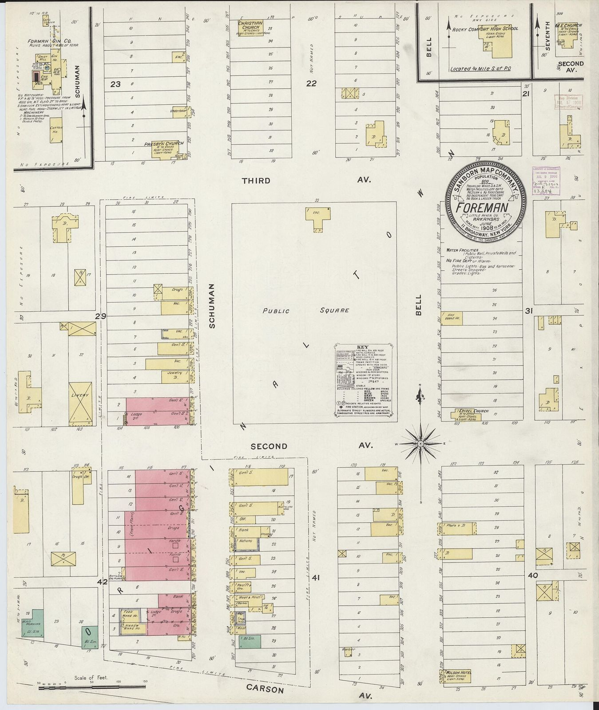
16 octobre 1928 · Arden, Arkansas
Dorothy Bernice Callicott — « Dottie » — grandit à la campagne. À 32 ans, le 6 mai 1961, elle épouse Brunon John Strozyk, d'une famille polonaise de Marche, un village fondé par des immigrants polonais près de North Little Rock. Elle se convertit au catholicisme et devient l'âme de la paroisse Immaculate Heart of Mary, où Brunon est diacre.
Ceux qui l'ont connue parlent de son sourire constant et de son regard pétillant. Quatre enfants : John, Paul, Shara et Terri — la mère de Hayden.
Dorothy s'est éteinte le 18 janvier 2020, à 91 ans. Elle repose au cimetière de sa paroisse, à Marche.
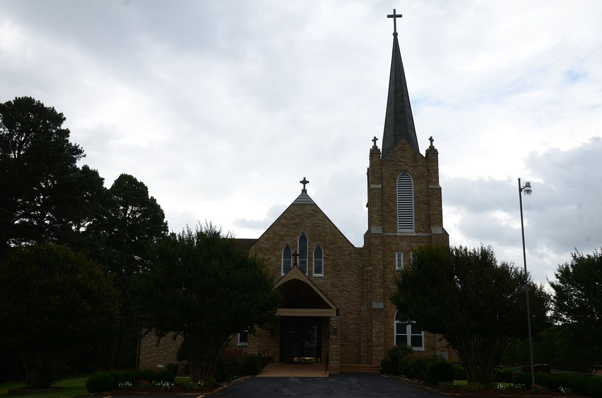
For Hayden
Your grandmother Dorothy “Dottie” Callicott was born on October 16, 1928 in Arden, Arkansas. Her family name comes from Old English cald cot, “the cold cottage”. The Callicotts were colonists in Virginia in the 1700s, then moved through North Carolina, Tennessee and Mississippi before farming in Little River County, Arkansas. Dottie married Deacon Brunon John Strozyk in 1961 and became the heart of Immaculate Heart of Mary parish in Marche. Fun fact: two of Marine's grandparents, Marc and Xavier, were born in the summer of 1929 — just months after Dottie.
Intermède
Dorothy (oct. 1928, Arkansas), Marc (juil. 1929, Poitou) et Xavier (août 1929, Tarn) : trois grands-parents de Marine et Hayden nés à dix mois d'écart, sur deux continents.
Joseph Bolon en Champagne, Dominique Valverde appelé à Oran, Wallace Callicott mobilisé en Arkansas : la même année, trois hommes des deux arbres portaient l'uniforme.
Xavier s'est éteint en novembre 2019, Dorothy en janvier 2020. Ils ne se sont jamais connus.
Trinitaria, née un 5 août, s'appelle « Neiges ». Sa fille, née un 5 février, s'appelle « Agathe ». Même coutume, même chiffre.
Chapitre sept
Chaque nom, chaque prénom est un petit fossile. Retourne les cartes.
Chapitre huit
De 1509 à aujourd'hui, la grande Histoire et la tienne.
Épilogue
Ce livre a été écrit à partir de recherches dans les bases généalogiques et l'état civil. Les dates du XXe siècle sont solides ; plus on remonte, plus certains liens sont des pistes, fondées sur des noms, des lieux et des dates qui concordent — à confirmer dans les archives. Voici comment aller plus loin.
Les actes de naissance d'Oran (1894) et d'Oued Imbert (1898) sont numérisés et gratuits.
Archives nationales d'outre-mer (ANOM) →Demander une copie intégrale de son acte de naissance (Saint-Martin-de-Bernegoue, 1929) ou de décès (Toulouse, 2001). C'est gratuit, sur service-public.fr. Son dossier militaire est à Pau (CAPM).
Archives des Deux-Sèvres →Les actes de naissance de Labruguière (1929) et de Dourgne (1939), et la fiche matricule de Joseph Bolon (classe 1915) aux Archives du Tarn.
Archives du Tarn →Les recensements américains de 1930, 1940 et 1950 sont en ligne et gratuits : on y trouvera Oscar, Viola et la petite Dorothy.
FamilySearch →Les plus beaux documents ne sont pas aux archives : ce sont les photos dans les boîtes à chaussures, les livrets de famille, les souvenirs de la famille. Ce livre a été fait pour s'enrichir — chaque photo retrouvée pourra prendre sa place dans l'arbre.